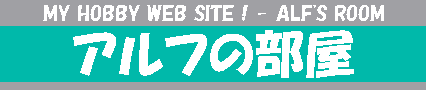

| ★不正規アドレスに注意！★ 「アルフの部屋」のアドレス(URL)は「https://alf-s-room.com」または「http://alf-s-room.main.jp」です。それ以外は不正規なアドレスです。 2023年4月15日現在、「.xyz」で終わる不正規なアドレスを確認していますが、正規のアドレスでアクセスした時と同じ内容が表示されます。しかし、今後は詐欺などの悪質な内容になる恐れも否定できませんので、正規のアドレスでアクセスしてください。不正規なアドレスでアクセスした場合に発生した被害などは、当サイトで補償しません。 |
| ★25周年★ 「アルフの部屋」は2021年8月17日で25周年になりました。最近は、更新間隔が長くなっていますが、今後もアクセスをよろしくお願いします。また、レスポンシブ対応（モバイル端末閲覧対応）を進めています。まだ、スマートフォンなどでは見づらいページがありますが、ご了承ください。 |
| ★About the English version of "Michaelsoft Binbows"★ "Michaelsoft Binbows" is introduced to the Youtube channel of American resident, and there are many viewers from outside Japan. Therefore, we created a special English version page. ●To "Michaelsoft Binbows" English version page. （「Michaelsoft Binbows」がアメリカ在住者のYouTubeチャンネルに紹介され、日本国外からの閲覧者が多くなっています。そのため、特別に英語版のページを作成しました。） |
|
| 更新案内 | ||
| 2023/08/22 | 鉄道趣味の部屋 | 「立山黒部リベンジ旅行（2018年）」を更新。 |
| 2023/08/22 | 鉄道趣味の部屋 | ムービーライブラリーを更新。 |
| 2023/06/20 | 鉄道趣味の部屋 | ググっとぐんま鉄道スタンプラリー（2010年）を更新。モバイル端末閲覧対応化。 |
| 2023/02/14 | コンピューター室 | 個人的ゲームマシン資料室を更新。 |
| 2023/02/07 | コンピューター室 | パソコンカタログコレクションを更新。 |
| 2023/01/17 | コンピューター室 | 私のパソコン紹介を更新。 |
| 2022/12/23 | 鉄道趣味の部屋 | ＪＲ（国鉄）電車一覧を更新。 |
| 2022/12/13 | 鉄道趣味の部屋 | 「山手線の駅」を更新。 |
| 2021/10/26 | 展示室 | 「これ何だろう？」に「Michaelsoft Binbows」の英語版を追加。 |
| 2021/05/23 | リンク | リンク切れサイトの整理。モバイル端末閲覧対応化。 |
| 2020/05/13 | 音楽室 | 鉄道関連音楽の「ＪＲ常磐線・北千住駅１番線ホームの（旧）発車メロディ」のオーディオファイルをMP3へ変更。 |
| 2020/03/04 | 職員室 | 管理人プロフィールを更新。 |
| 2015/06/07 | トップページ | 「当サイトについて」を更新。 |
| メニュー | ||
| 鉄道趣味の部屋 | 更新：2023/08/22 （写真、乗車レポート、資料、サウンド、ムービー、その他） |
|
| 音楽室 | 更新：2020/05/13 （ゲーム音楽、鉄道関連音楽、その他） |
|
| コンピューター室 | 更新：2023/02/14 （パソコン紹介、ゲームマシン紹介、保存カタログ公開、PC-FXGAソフト） |
|
| 展示室 | 更新：2021/10/26 （変なもの・珍しいもの・謎なもの紹介、写真、その他） |
|
| 職員室 | 更新：2020/03/04 （日記、管理人プロフィール、イメージキャラクタープロフィール） |
|
| リンク | 更新：2021/05/23 （リンク集） |
|
| ブログ | アルフの部屋ブログ（Seesaaブログ） | |
| 動画 | アルフの部屋チャンネル（YouTube） | |
| X（旧：ツイッター） | X(Old:Twitter)（アルフ） | |
|
当サイトは、ロリポップ！レンタルサーバー（GMOペパボ）を使用しています。 当サイトのアドレスは、ムームードメイン（GMOペパボ）で取得しています。 |
| メディア協力 | ||
| 雑誌 | 「テックウィン」2003年9月号（エンターブレイン） | 「アルフの部屋」が紹介されました。 |
| テレビ | 「ニューデザインパラダイス」2004年11月12日放送（フジテレビ） | 「展示室」の「これ何だろう？」で紹介している「ソロカル」を撮影のために貸し出しました。 |
| 書籍 | 「全国私鉄ほろ酔い完乗記 上」（フィールドワイ） | 「鉄道趣味の部屋」の「北海道・東北レポート」で使用している「札幌市営地下鉄南北線5000系電車」の写真が掲載されました。 |
| 書籍 | 「全国私鉄ほろ酔い完乗記 下」（フィールドワイ） | 数点の鉄道写真が掲載されました。 |
| 社内報 | 京阪バス株式会社 | 「鉄道趣味の部屋」の「愛知万博鉄道関連レポート」で使用しているIMTSの写真使用を許諾しました。 |
| 書籍 | 「決定版 新幹線と世界の高速鉄道」（竹書房） | 「鉄道趣味の部屋」の「第１４回 仙台新幹線車両基地まつり」で使用しているE2系およびE4系新幹線電車運転席の写真が掲載されました。 |
| テレビ | 「経営情報学入門（'23）第1回」2023年4月1日初回放送（放送大学） | 「鉄道趣味の部屋」の「Suica＆相互利用カード情報」で使用している「ＪＲ東日本 自動改札機（旧型）」の写真が番組内の解説用フリップに使用されました。 |
| 注意事項 |
|
・当サイトは非営利目的で趣味活動として運営しています。情報は100%の正確性を保証するものではありません。 ・営利目的の広告バナー等は一切掲載しません。 ・データー、写真、音声等を無断で転載、流用することは禁止します。 ・本文中に記載されている商品名等は各社の登録商標または商標です。 ・OSやブラウザのバージョンによっては文字化け等、正しく表示されない場合があります。 |
| 「アルフの部屋」へのリンクについて |
|
当サイトはリンクフリーです。自由にリンクしてかまいませんが、リンクはトップページ（ https://alf-s-room.com/ ）へお願いします。 上のバナーはコピーしてご利用下さい。 ・写真、音声等への直リンクはご遠慮ください。 |
| 「アルフの部屋」との相互リンクについて |
|
・個人ウェブサイトであること。原則として営利目的の企業サイトとは相互リンクしません。（ただし、企業サイトでも「アルフの部屋」の内容に関連性がある場合は、リンクを許可する場合があります。） ・現在は鉄道関連、パソコン関連の記事が含まれるサイトに限って相互リンクを受け付けています。それ以外のサイトはご遠慮願います。 |
| 管理人へメール送信 |
|
メール送信上の注意 ・メールは日本語でお願いします。(I am sorry. Mail is Japanese only.) ・広告は送らないでください。 ・相互リンク依頼は上記の相互リンク注意事項を読んでから送ってください。 以上の注意が守られていないメールは迷惑メールと判断して削除する場合があります。 なお、お送りいただいたメールの返信ができない場合があります。
管理人：安達良則 |
| Copyright 1996-2023 Adachi Yoshinori | |